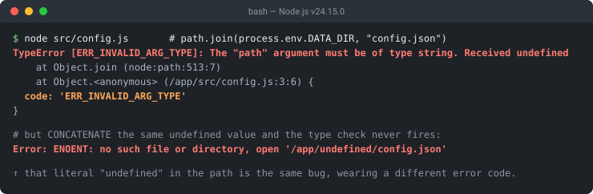

Quick answer
- Read the end of the line first. The
Receivedclause names what Node actually got — that is your bug. Received undefinedis the common case: an unset env var, a missing object key, or a function that returned nothing.- The quoted name (
"path","paths[0]","data") tells you which argument failed — the index counts from zero. - Nothing is wrong with the file or the filesystem. Node never got that far.
The exact error string
TypeError [ERR_INVALID_ARG_TYPE]: The "path" argument must be of type string. Received undefined
at Object.join (node:path:513:7)
at Object.<anonymous> (/app/src/config.js:3:6)
at Module._compile (node:internal/modules/cjs/loader:1830:14) {
code: 'ERR_INVALID_ARG_TYPE'
}
// fs accepts more types, so its wording is longer:
TypeError [ERR_INVALID_ARG_TYPE]: The "path" argument must be of type string or an instance of Buffer or URL. Received undefined
// a varargs call names the failing argument by index:
TypeError [ERR_INVALID_ARG_TYPE]: The "paths[0]" argument must be of type string. Received an instance of Array
// and it is not only about paths:
TypeError [ERR_INVALID_ARG_TYPE]: The "data" argument must be of type string or an instance of Buffer, TypedArray, or DataView. Received undefinedNode threw this before carrying out the operation you asked for. Node APIs commonly validate argument types up front, so in the path.join() case above nothing was read, written or resolved — the function looked at one argument, saw the wrong type, and stopped. That is usually why nothing is wrong with your file or your permissions: the value you passed in was already broken by the time the call happened.
What it actually looks like

v24.15.0 from the same missing environment variable. The second form is the one that wastes time: concatenation stringifies undefined, so the type check passes and you get ENOENT for a directory literally named undefined.Anatomy of the message — three slots, three facts
Every instance of this error is the same sentence with three blanks filled in. Once you can see the slots, the message stops being noise:
The same sentence every time, with three blanks filled in.
Slot 3 is the one to read first, and it is the one most people skip. Slots 1 and 2 describe Node's expectations, which you can look up; slot 3 describes your program, which you cannot.
Slot 1 — which argument
Usually a plain parameter name in quotes: "path", "data", "algorithm". Two variations matter. When the function takes a variable number of arguments, Node appends an index: "paths[0]" means the first segment you passed to path.join() or path.resolve(), counting from zero. And when the parameter has no name in Node's signature, the message falls back to a position: The first argument must be of type string..., which is what Buffer.from() produces.
Slot 2 — what the function accepts
This list is that specific function's real contract, not boilerplate, and it differs between modules that look interchangeable:
| Call | Accepted types in the message |
|---|---|
path.join(...) | must be of type string |
fs.readFileSync(...) | must be of type string or an instance of Buffer or URL |
fs.writeFileSync(path, data) | must be of type string or an instance of Buffer, TypedArray, or DataView |
Buffer.from(...) | must be of type string or an instance of Buffer, ArrayBuffer, or Array or an Array-like Object |
That difference is load-bearing. A URL object is a perfectly good argument to fs.readFileSync() and a fatal one to path.join() — so "it worked when I passed it to fs" is not evidence that the value is fine.
Slot 3 — how Node formats the Received clause
Node does not print the value one uniform way. It picks a format based on what it found, and the format itself is diagnostic — before you read the value, the shape of the clause already tells you roughly what went wrong. The forms below were all observed on Node v24.15.0; exact wording can vary between Node.js releases, so treat the shapes rather than the strings as the durable part.
| Format | Examples | What it usually means |
|---|---|---|
| The bare word | Received undefinedReceived null | undefined: unset env var, missing object key, function returned nothing. null: an explicit empty — a DB NULL, a cleared field |
| Type, then the value | Received type number (42)Received type boolean (true) | Any other primitive. A port, ID or count used where a name was wanted — and the value is handed to you |
| The constructor name | Received an instance of ObjectReceived an instance of ArrayReceived an instance of Promise | You passed a wrapper instead of a field on it, a list where segments were expected, or forgot an await |
| Function, then its name | Received function getConfigPath | A missing call: getConfigPath instead of getConfigPath() |
| An inspect-style dump | Received [Object: null prototype] {} | A fallback for values with no ordinary constructor — typically Object.create(null) |
The practical split is between the second row and the third. A primitive prints with its value, so Received type number (8080) hands you the culprit outright. An object prints only its constructor name, so Received an instance of Object tells you the category and nothing more — you still have to log the thing yourself.
Fix 1: Received undefined — find the missing value
This is the dominant case. The error is downstream of whatever failed to produce a value, so fixing it means looking one line up, not at the call that threw:
const dir = process.env.DATA_DIR; // never set → undefined
path.join(dir, "config.json");
// ❌ The "path" argument must be of type string. Received undefined
// ✅ fail where the problem actually is, with a message that names it
const dir = process.env.DATA_DIR;
if (!dir) throw new Error("DATA_DIR is not set");
path.join(dir, "config.json");A default is often better than a guard: process.env.DATA_DIR ?? "./data" uses ?? rather than || so an intentional empty string survives. If the variable should have come from a .env file that is not being read, the loading order is its own problem — see process.env.X is undefined, which covers why dotenv so often runs too late.
Environment variables get the attention, but two other sources produce the identical Received undefined and are just as common. The first is destructuring a key that is not there — note that the destructure itself succeeds silently, and only the later use fails:
const config = { dataDir: "/var/data" };
const { configPath } = config; // ✅ no error — configPath is just undefined
path.join(configPath, "settings.json");
// ❌ The "path" argument must be of type string. Received undefinedA typo or a renamed field in a config object lands here, and so does a response body whose shape changed. The second source is a command-line argument that was never supplied:
const targetDir = process.argv[2]; // `node build.js` with no argument
path.join(targetDir, "config.json");
// ❌ The "path" argument must be of type string. Received undefined
// ✅ validate CLI input before using it
if (!targetDir) {
console.error("usage: node build.js <target-dir>");
process.exit(1);
}Both verified on Node v24.15.0. Note the naming in that last example: avoid calling the variable path, because doing so shadows the path module and the next line fails with path.join is not a function instead — a different error that sends you looking in entirely the wrong place.
Fix 2: Received an instance of Object — you passed the wrapper
The second most common shape, and it comes from config objects and API responses:
const opts = { dir: "/var/data", name: "config.json" };
path.join(opts, "config.json");
// ❌ The "path" argument must be of type string. Received an instance of Object
path.join(opts.dir, opts.name); // ✅ pass the fields, not the wrapperWhen the message says an instance of Array instead, you probably have the segments already and just need to spread them: path.join(...segments) rather than path.join(segments). That one produces The "paths[0]" argument must be of type string. Received an instance of Array — the index confirms Node looked at your array as if it were the first segment.
Fix 3: Received function — a missing pair of parentheses
const getConfigPath = () => "/etc/app/config.json";
fs.readFileSync(getConfigPath);
// ❌ ... Received function getConfigPath
fs.readFileSync(getConfigPath()); // ✅This grammar is the most generous of the four, because Node prints function followed by the function's own name — so the message hands you the exact identifier you forgot to call. A truly anonymous function has no name to print and the line simply ends after function, which is a small clue in itself that the value came from an inline expression rather than a named binding.
It is an easy one to stare past in an editor, because the identifier is spelled correctly and your linter is happy; only the () is absent.
Fix 4: the async case — a Promise where a string belongs
A forgotten await produces an object, so it surfaces as the Object grammar rather than anything mentioning promises:
const dir = resolveDataDir(); // async, not awaited
fs.readFileSync(path.join(dir, "config.json"));
// ❌ The "path" argument must be of type string. Received an instance of Promise
const dir = await resolveDataDir(); // ✅When a Promise appears where a string was expected, check whether the value-producing call needs to be awaited before it reaches the path operation. That is usually the answer, and the await usually belongs upstream on the line that produced the value — but not always. Sometimes the real mistake is the API boundary: a function that legitimately returns a promise is being wired into synchronous code that should have been async itself.
path.join() vs path.resolve() — both demand strings, for different jobs
Both functions take a sequence of string segments, and both raise this error with the indexed paths[n] name when one of them is not a string. What they do with those strings is not the same, and picking the wrong one produces a working path that points somewhere you did not intend:
// join() concatenates and normalises. The result can be relative.
path.join("a", "b"); // "a/b"
path.join("/app", "/etc", "f.json"); // "/app/etc/f.json"
// resolve() walks right-to-left until it has an absolute path.
path.resolve("a", "b"); // "/current/working/dir/a/b"
path.resolve("/app", "/etc", "f.json"); // "/etc/f.json" ← "/app" discardedThat last line is the one worth remembering. resolve() treats a leading / on any segment as a fresh start and throws away everything to its left, so a single user-supplied value beginning with a slash can silently relocate the whole path — whereas join() would have kept your prefix. Outputs shown in POSIX form; on Windows the separators are backslashes and resolve() prepends a drive letter.
The rule of thumb: use join() to build a path underneath a base you control, and resolve() when you genuinely need an absolute path from possibly-relative input. Either way, validate the segments first — that is what keeps paths[0] out of your logs.
The trap: when this error does not fire
Concatenating an undefined value does not trigger the type check at all, because string concatenation converts it first. The result is a valid string, so Node's guard passes and the failure moves downstream to the filesystem:
const dir = process.env.DATA_DIR; // undefined
fs.readFileSync(dir + "/config.json");
// no ERR_INVALID_ARG_TYPE — you get this instead:
Error: ENOENT: no such file or directory, open '/app/undefined/config.json'
code: 'ENOENT',
path: '/app/undefined/config.json'Look at that path: the literal word undefined is now a directory name. That is the signature of exactly the same bug wearing a different error code, and it is worth recognising because ENOENT sends people hunting for a missing file that was never supposed to exist. The same reasoning applies to `${dir}/config.json` — template literals stringify too. Passing the value as its own argument, as path.join(dir, "config.json") does, is what lets Node catch the mistake at the point it happens.
An empty string is the other non-firing case: path.join("") is legal and returns ".", so a blank env var slips through the type check and quietly resolves to the current working directory.
Catch it by code, never by message
try {
fs.readFileSync(configPath);
} catch (err) {
if (err.code === "ERR_INVALID_ARG_TYPE") { // ✅ the documented error code
console.error("config path was not a string:", configPath);
}
throw err;
}Use the documented error code rather than depending on the human-readable message. The code property is a stable identifier intended to be matched on; the message is not, since it embeds runtime values and its wording can change between Node.js releases. Error handling that greps the message is handling that can break on a Node upgrade without telling you.
Debugging checklist
- ✓ Read the
Receivedclause before anything else — it names the actual defect - ✓ Note the quoted argument name; an index like
paths[1]counts from zero - ✓ Log the variable on the line above the failing call, not the call itself
- ✓
Received an instance of Promise? A missingawaitupstream - ✓
Received functionfollowed by a name? A missing() - ✓ Seeing the literal word
undefinedinside anENOENTpath? Same bug, hidden by concatenation - ✓ Branch on
err.code, never on the message text
Frequently Asked Questions
What does ERR_INVALID_ARG_TYPE actually mean?
A Node.js API was handed an argument of the wrong type and rejected it up front, before carrying out the operation you asked for. The message is built from three facts Node already has: which parameter failed, what that parameter accepts, and what it actually received.
Why does the message say Received undefined when I passed a variable?
Because the variable evaluated to undefined by the time the call ran. The common sources are an unset environment variable, a destructured key that does not exist, a command-line argument that was not supplied, and a function that returned nothing. Log the variable on the line above the failing call.
What is the difference between Received undefined and Received type number (42)?
They are two of the formats Node uses for the Received clause. undefined and null print bare, while other primitives print as the type followed by the value in parentheses, so the number form hands you the offending value directly. Objects print only their constructor name, which gives you the category but not the contents.
Why does the message name paths[0] instead of path?
Because path.join() and path.resolve() accept any number of segments, so Node indexes them to show which one failed, counting from zero. On a long join call that saves you checking each segment by hand.
Why do fs and path report different accepted types for the same path argument?
Because they accept different things. path.join() works only with strings, while the fs functions also take a Buffer or a file URL, and each message states that function's real contract. That is why a URL object is a valid argument to fs.readFileSync() and not to path.join().
My path is undefined but I get ENOENT instead of this error. Why?
Because you concatenated instead of passing the value as its own argument. undefined + "/config.json" produces a valid string, so the type check passes and the failure moves to the filesystem, giving you ENOENT for a path containing the literal word undefined. That literal undefined is the signature of the same bug.
How do I catch this specific error in code?
Branch on err.code === 'ERR_INVALID_ARG_TYPE' rather than matching the message text. The code is the documented, stable identifier, while the message embeds runtime values and its wording can change between Node.js releases.
References
- ERR_INVALID_ARG_TYPE (Node.js Errors documentation)
- path.join(...paths) (Node.js Path documentation)
- error.code (Node.js Errors documentation)
Not sure which error you have?
Paste the stack trace and get routed straight to the cause-and-fix reference for it — entirely in your browser.